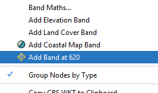
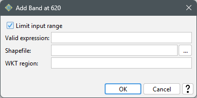

|
|
EOMasters Toolbox | |
You can add the Band at 620nm to a product by selecting the corresponding action from the context menu. The action will be disabled if the necessary band at 665nm is not present.

The creation of the Coastal Map band can be configured in the upcoming dialog:

Limit input range:
Whether the input range should be limited to the reliable value range. The range is
defined * as [0, 0.065]
Valid expression:
This expression defines which pixels are valid for processing. It must follow the rules
of Band Maths.
Shapefile:
A shapefile can be selected to define the valid region for the processing.
WKT region:
A geometry using WGS84 coordinates can be specified following the
.